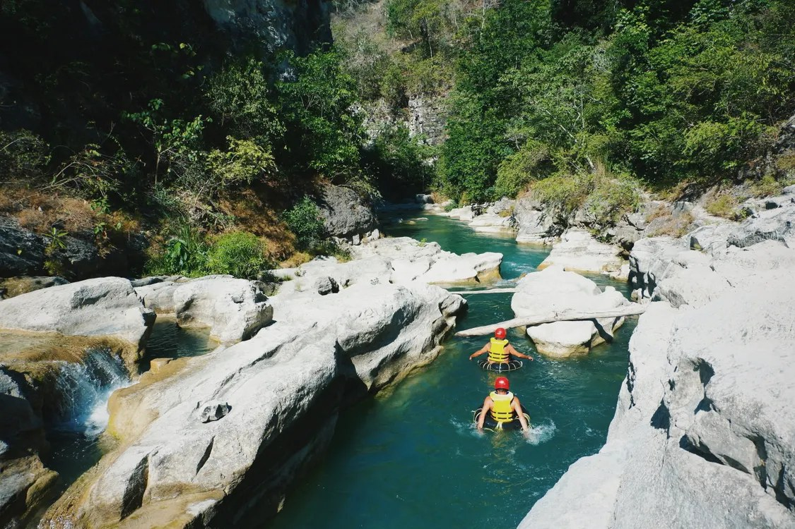
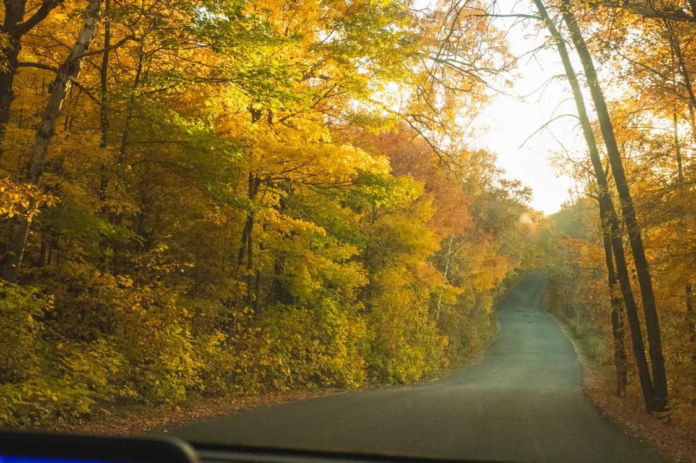
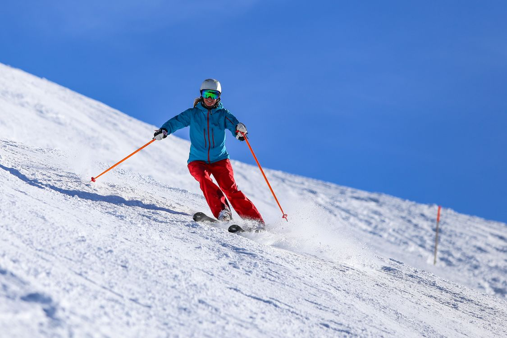

房子在纽约州卡茨基尔山区 Shandaken，Route 28 沿线，Belleayre 和 Hunter 两座雪场中间，住 12 人（套间 5 人、大房 4 人、小房 3 人），有桑拿屋和户外火坑。
以下车程均为从房子出发的大约时间，山路多弯，请以导航为准，出门前确认营业时间和路况。
春天 · 3–5 月
主题：开钓季 + 瀑布水量最大的时候

1. Esopus Creek 钓鱼
纽约州鳟鱼季每年 4 月 1 日开钓，Esopus Creek 是卡茨基尔最有名的飞钓溪流之一，春天虫季（hatch）鱼口最好。河段就在 Route 28 沿线，离房子很近，早上钓几个小时回来吃早饭。
车程：约 5 分钟
注意：需要纽约州钓鱼证；4 月 1 日至 10 月 15 日为捕捞季，有数量和尺寸限制。
2. Kaaterskill Falls 瀑布徒步
纽约州最高的瀑布（260 英尺，两层），春天雪水多、水量最大。从 Route 23A 的步道口走进去，来回约 1–2 小时，石阶较陡，穿防滑鞋。
车程：约 40 分钟
注意：瀑布本身不让游泳（州里规定）。想玩水去附近的 North-South Lake 沙滩，那里可以游泳。
3. Maple Weekend 枫糖节（3 月两个周末）
去附近的糖厂看枫糖熬制、尝新鲜枫糖浆，Saugerties 一带有几家农场开放参观，适合带孩子。
车程：约 45 分钟（Saugerties 方向）
4. 春季滑雪 + Hunter 池塘滑水赛
3 月底雪场还没关，Hunter 每年 3 月底有 Denim Dash 池塘滑水（Pond Skim）活动，雪道人少、阳光好，滑完直接进春季度假模式。
车程：约 25 分钟（Hunter Mountain）
5. Ashokan Rail Trail 骑行 / 散步
沿着 Ashokan 水库修的平坦步道，全长约 11.5 英里，走路、跑步、骑车都行，水库和山景很好拍，适合全家慢慢走。
车程：约 25 分钟
住在这里：春天是淡季，房子安静、溪水声大，白天钓鱼爬山，晚上火坑边烤棉花糖，桑拿去去寒气。
夏天 · 6–8 月
主题：玩水、漂流、音乐节——一年里最热闹的时候

1. Esopus Creek 漂流（Town Tinker，Phoenicia）
在 Phoenicia 租个橡皮圈，沿 Esopus Creek 漂约 5 英里，有班车接回起点。水流看水库放水安排，夏天周末人多，建议早点去。
车程：约 10 分钟
2. Belleayre Beach（Pine Hill Lake）
有救生员的湖滩，游泳、划皮划艇、桨板、沙滩排球，带野餐垫就能待一下午，适合带小孩的家庭。
车程：约 12 分钟
3. Rail Explorers 铁轨单车（Phoenicia）
骑四人脚踏车沿着旧铁轨走，River Run 线约 8 英里、2.5 小时，沿 Esopus Creek 穿过森林；还有黄昏和灯笼夜骑。车站是 1899 年的老火车站，里面有个小铁路博物馆。
车程：约 10 分钟
4. Hunter Mountain：观景缆车 + 高空滑索
坐 Kaatskill Flyer 缆车上 3,200 英尺的山顶看风景；NY Zipline 是北美最长、最高的滑索之一，全程近 5 英里，最高离地约 600 英尺。山上还有山地自行车和飞盘高尔夫。
车程：约 25 分钟
5. Peekamoose Blue Hole 游泳
Rondout Creek 上的天然蓝水潭，水清见底，是卡茨基尔最有名的游泳点。夏天非常火，需要提前在网上申请 DEC 许可证，名额有限，先到先得。
车程：约 40–45 分钟
注意：必须提前办许可证，没有证进不去。
6. North-South Lake 湖滩（Haines Falls）
离 Kaaterskill Falls 开车约 10 分钟的湖，有两个沙滩游泳区，有救生员值班的时候可以游泳；还能租独木舟、皮划艇和桨板。瀑布那边不让游泳，想玩水就来这里。
车程：约 40–45 分钟（离 Kaaterskill Falls 约 10 分钟）
住在这里：夏天房子就是大本营——白天玩水爬山，傍晚回房子，12 个人围着火坑烧烤，桑拿蒸完再睡，Phoenicia 小镇就在 10 分钟外，吃饭买东西都方便。
秋天 · 9–11 月
主题：看枫叶 + 丰收节，卡茨基尔最美的季节

1. Route 28 枫叶自驾
房子门口就是 Route 28 卡茨基尔风景大道，枫叶 9 月底先从高海拔红起，10 月前两周山谷里最盛。开车往 Belleayre 或 Hunter 方向，随便停哪一段都好看；哥伦布日周末人最多，工作日来更清静。
车程：出门就是
2. Hunter Mountain：Colors in the Catskills（10 月的周末）
Hunter 的秋日节，有现场音乐、摊位、缆车上山看红叶，还有举啤酒杯比赛。10 月有三个周末（2026 年是 10 月 3–4、10–11、17–18 日，每年日期略有不同）。
车程：约 25 分钟
3. Hudson Valley Garlic Festival（Saugerties，9 月底）
哈德逊河谷最大的大蒜节，吃大蒜冰淇淋、看厨艺演示、逛农夫摊位，适合上午去、下午回来看枫叶。
车程：约 45–50 分钟
4. 摘苹果 + 品苹果酒（New Paltz）
去 Twin Star Orchards / Brooklyn Cider House 摘苹果、喝现酿苹果酒，农场秋天景色很好，适合拍照。
车程：约 45 分钟
5. Woodstock 小镇一日游
逛 Tinker Street 的小店和画廊，周六有农夫市场，Bearsville Theater 常有演出；秋天小镇加枫叶，是卡茨基尔最经典的一天。
车程：约 35 分钟
住在这里：秋天是枫叶季最抢手的时段，房子一次能住 12 个人，一大家子或几个家庭拼一间，比分开订酒店划算得多，晚上火坑边看星星。
冬天 · 11 月底–4 月初
主题：两座雪场，一个家

1. Belleayre Mountain 滑雪 / 单板
62 条雪道，gondola 缆车，有滑雪学校和儿童区，雪票用纽约州 ORDA 的 SKI3 通票（Belleayre、Gore、Whiteface 三座山通用），不是 Epic。雪季一般 11 月底到 4 月初。早上出门十几分钟就到雪场，滑完回来桑拿+火坑。
车程：约 12–15 分钟
2. Hunter Mountain 滑雪 / 玩雪
67 条雪道，100% 造雪，Epic Pass 通用。除了滑雪，还有约 1,000 英尺长的雪圈乐园（不用会滑雪也能玩），冬天有不少主题周末：跨年夜火炬游行和烟花（12 月 31 日）、Pride 周末、Black Ski 周末等。
车程：约 25 分钟
3. Windham Mountain Club（第三座雪场，要提前订票）
54 条雪道、285 英亩、落差 1,600 英尺，开车约 35–40 分钟，在 Hunter 再往东。2023 年起改成私人俱乐部，但散客日票照样卖——每天限量，周末和节假日经常卖完，现场买票只有有名额才卖、而且最贵，所以一定要网上提前订。2025/26 雪季起退出 Ikon，Epic 也不通用；日票按日期大约 $79–$150。适合 Belleayre 和 Hunter 人多时换个清静地方。
车程：约 35–40 分钟
4. Plattekill Mountain（家庭小雪场）
Roxbury 的家庭经营小雪场，41 条雪道，人少雪好，周五到周日加节假日开放；周五、周六晚上还有夜场雪圈。独立雪场，不在 Epic 或 Ikon 上，雪票买它自己的日票或季票。想避开大雪场的人流可以来这里。
车程：约 40–45 分钟
5. 越野滑雪 / 雪鞋徒步
Belleayre 有越野雪道；Tannersville 的 Mountain Trails 中心有约 35 公里压过的越野雪道。不想滑高山雪的人可以慢慢走雪鞋，看冬天的森林。
车程：约 25–30 分钟
6. 滑雪课 + 拼车（房子自带服务）
房东提供单双板私教课（Belleayre 或 Hunter 任选），也有从纽约市出发的拼车接送。住客可以约课、约车，到了直接上雪，装备和行程房东可以帮忙协调。
车程：雪场约 12–25 分钟；纽约市拼车约 2.5 小时
住在这里：冬天是房子的主季——两座雪场都在半小时内，滑完雪回来桑拿解乏、火坑边喝热饮，12 个人住一栋，早上不用赶酒店早餐，穿上雪靴直接出门。
实用信息
- 最近的小镇：Phoenicia 约 10 分钟（Phoenicia Diner、餐馆、小店、加油站）；Woodstock 约 35 分钟；Saugerties 约 45–50 分钟（超市、大卖场）；Kingston 约 40 分钟。
- 从纽约市来：I-87 北上到 Kingston 出口，走 Route 28 向西，约 2.5 小时。
- 徒步提示：Slide Mountain（卡茨基尔最高峰，4,180 英尺）步道口约 20–25 分钟；Giant Ledge / Panther Mountain 步道口（Route 47 沿线）约 15–20 分钟；Giant Ledge 全程约 3.2 英里，是看日落的好地方。
- 需要提前准备的：Peekamoose Blue Hole 要提前申请 DEC 许可证；钓鱼要纽约州钓鱼证；滑雪旺季周末建议提前订票；秋天枫叶季和冬天节假日周末建议提前订房。
- 票价：各景点票价随季节浮动，出门前以官网为准。
住在这里，玩遍四季
看中了哪个季节？去民宿页看看房间和房价，填表预订，或者直接私信我们。

微信扫码，加我好友，直接问房价、订房